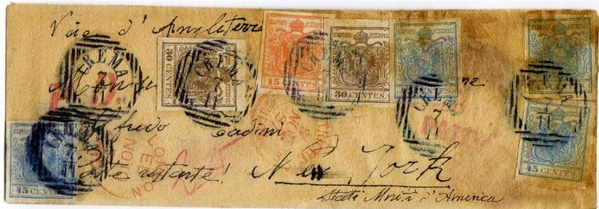
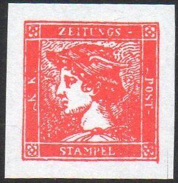

Return To Catalogue - Austria Overview - Italian States modern forgeries
Note: on my website many of the
pictures can not be seen! They are of course present in the
catalogue;
contact me if you want to purchase the catalogue.
I have seen many forgeries of Austrian Italy, often offered together with modern forgeries of the Italian States, printed on very white paper or also on slightly yellowish paper sometimes with very large margins. They are offered on Ebay and other online auctions in large quantities (2005) under the title 'ristampe' (reprints) or 'tappabuchi'. Some design errors nevertheless occur in most of these forgeries. I do not know who made these forgeries. They seem to have been made somewhere in the 1960s (probably in Italy as the source from where these forgeries are marketed is in most cases this country, if my information is correct in Treviso). If anybody has more information, please contact me!
I will give some examples of these forgeries here:
The above forgeries of Lombardy-Venice seem to be printed on relatively modern paper, the '1' and '5' are different from the genuine stamps (the value 5 c also exists). Furthermore the design is slightly blurred. The same set exists for the first stamps of Austria (see last scan).
I've seen the corresponding values of Austria (also uncancelled) being offered at the same time in forgery lots. They were probably made by the same forger (sorry, no images available yet).


Zoom-in on this letter
Another forged letter with forged 'CREMA' cancels
I've seen two almost identical covers addressed to people in Amman in the same handwriting, with the same 'PAQUEBOT' cancel, the same 'ALEXANDRIA NO 22 1857' cancel, the same red 'P.D.' cancel, the same 'RHO 5 11' cancels, the same 'AMMAN' cancel and the same 'LONDON ED NO 10 57 PAID' cancel. One envelope had an additional 'GERUSALEM 25 11' cancel, which the other didn't have. The cancels and forged stamps were not placed at the same places. These envelopes were offered on Ebay (2006) as 'forged with reprints'. The 'reprints' are actually the above shown forgeries.
And another letter with these forged stamps, now with 'RHO'
cancel
Some modern forgeries of the newspaper tax stamps.
Reduced sizes, note that the 2 k is very blurred and printed on
yellowish paper


The 1 k black shows small black spots in the design under a
magnifying glass.
Forgeries of the Mercury Newspaper stamps of Austria are also often offered together with these forgeries.

Here another modern forgery of the Mercury Newspaper stamp, but
different from the above ones. There is a whole set of these, all
different, but only the red one has a small 'extension' at the
bottom right hand side.


Modern forgeries of the other values. The blue forgery has a
defect in the upper right corner. All of them are reproduced from
photographs?
Click here for more of these modern forgeries, but for the Italian States.
Forgeries - Falsi - Faux - Fälschungen
{kind=link}